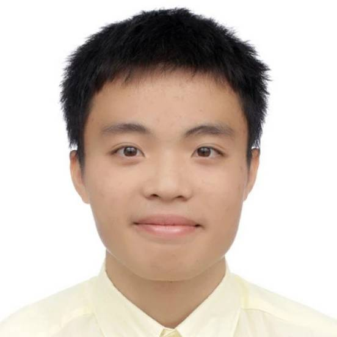
Tzu-Chieh Tai
Robotics M.S. Student
University of Michigan
About
I am a Robotics M.S. student at the University of Michigan (GPA 4.0/4.0), working on robot perception, SLAM, and 3D reconstruction. Most recently, I was an Autonomous Systems Engineer Intern at Tiami Networks, where I built vision-based obstacle avoidance and target tracking for drones.
At Michigan, I have worked as a research assistant in the MAVRIC Lab on semantic segmentation and LiDAR sensor fusion in Unreal Engine, and in the FROG Lab on neural-field reconstruction of underwater scenes. I also built an end-to-end ARKit LiDAR indoor reconstruction pipeline as a Computer Vision & LiDAR intern at Philo Homes.
Before that, I received my B.S. from National Tsing Hua University in the Interdisciplinary Program of Engineering (Mechanical & Electrical Engineering), ranked 3/36. I worked on rescue robots with autonomous exploration in Prof. Hsi-Pin Ma's Reliable Computing Lab, and on reinforcement-learning trajectory optimization for robotic arms at Gyro Systems.
I am broadly interested in robust robot perception, from state estimation and mapping to learning-based scene understanding, with the goal of making robots more intuitive and adaptive in the real world.
News
- Jun 2026 Joined Tiami Networks as an Autonomous Systems Engineer Intern.
- Mar 2026 Joined Philo Homes as a Computer Vision & LiDAR Research Intern, and the FROG Lab as a Research Assistant.
- Oct 2025 Joined the MAVRIC Lab at the University of Michigan as a Research Assistant.
- Sep 2025 Started my M.S. in Robotics at the University of Michigan.
Experience
Autonomous Systems Engineer Intern
|
|
Computer Vision & LiDAR Research Intern
|
|
Research Assistant
|
|
Research Assistant
|
|
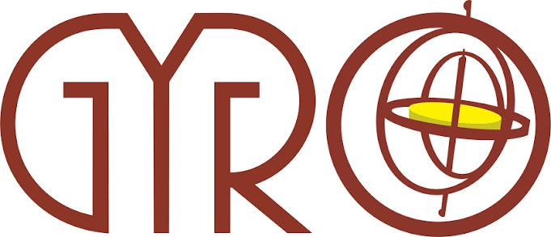 |
Robotic Arm Software Intern
|
Undergraduate Researcher
|
Selected Projects
Perception & Reconstruction
|
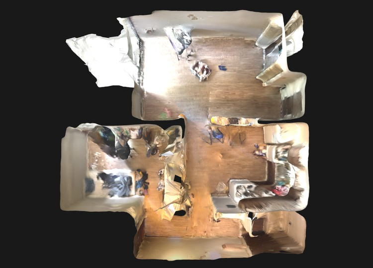 Indoor 3D Reconstruction with LiDAR and ARKit VIO Engineered an end-to-end indoor reconstruction pipeline, from ARKit LiDAR capture on iOS to cloud processing with COLMAP and OpenMVS on AWS (ECS, Step Functions, Lambda, FastAPI). Developed a hole-detection algorithm from scratch that guides users in real time to rescan missing regions, improving reconstruction quality by 30%. Reduced offline depth rendering time by 90% (5 min → 30 s) with Nvdiffrast and vectorization. |
|
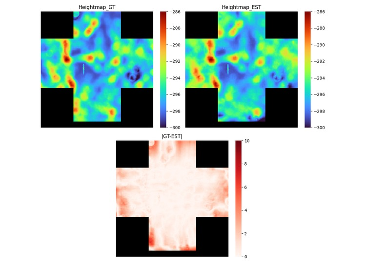 Neural Implicit Reconstruction for Underwater Terrain using Sidescan Sonar Imagery Developed and optimized SIREN (NeRF-based) models for high-fidelity underwater terrain reconstruction from sidescan sonar. Accelerated training by 2.2× by implementing hard sampling and vectorizing the sampling process on a 10k+ underwater dataset, without loss of reconstruction accuracy. |
|
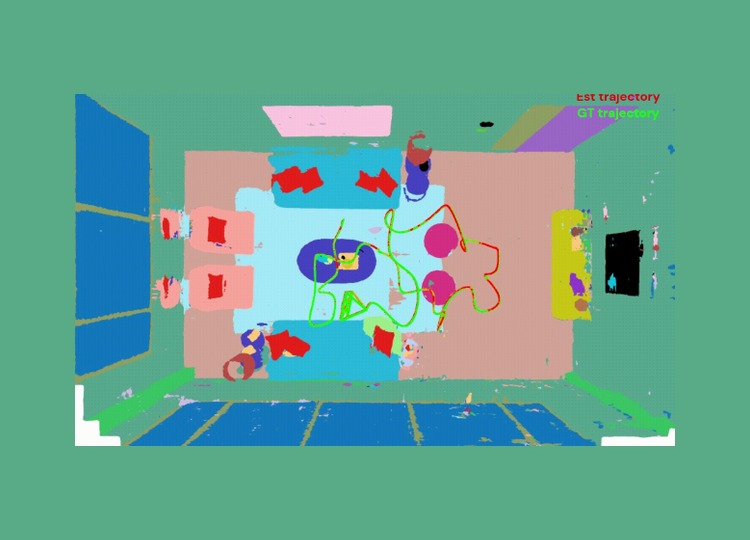 Uncertainty-Aware NeRF-SLAM
[Project Page]
[Code]
|
|
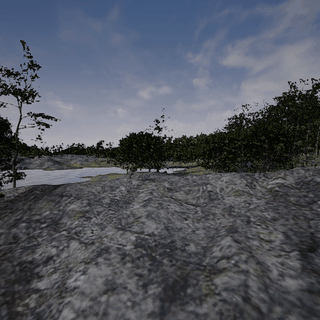 Autonomous Semantics Data Generation Pipeline Built a data collection pipeline in Unreal Engine 5 to generate paired RGB images and semantic masks of off-road terrain, and cleaned the labels into 7 classes (water, sky, ground, trees, bush, boulders, tall grass). Trained a transformer-based FuseForm (MiT backbone) segmentation model with inverse-frequency class weighting and confidence-thresholded predictions, achieving 90% accuracy, as the semantic input for LiDAR sensor fusion on a UGV. |
|
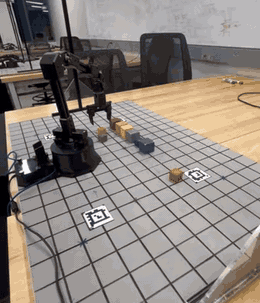 RGB-D Camera Perception Pipeline for 6-Axis Robotic Arm
[Video]
[Report]
|
|
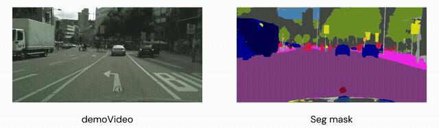 Attention UNet Trained an attention-gated U-Net with a four-level encoder on Cityscapes, reaching 93.67% pixel-wise accuracy after 71 epochs. |
Robot Planning & Control
|
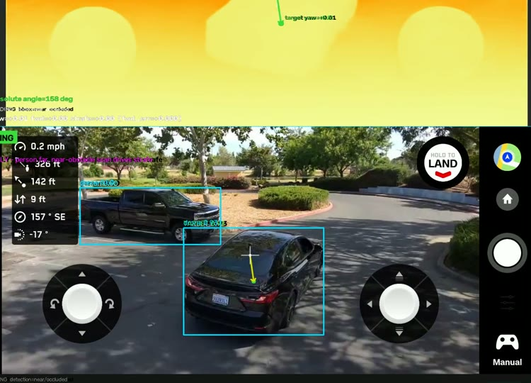 Autonomous Person and Vehicle Tracking for Drone System Built person and vehicle tracking with reactive obstacle avoidance on a Skydio 2 drone using a single low-resolution RGB camera. Calibrated Depth Anything V2 for metric outdoor depth and combined it with OSNet Re-ID, running at 15 FPS with TensorRT. Achieved zero tracking loss for vehicles at up to 12 km/h over a 1,500 m² urban area, and a 90% success rate in a forest. |
|
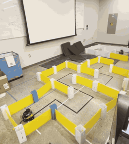 Autonomous Mobile Robot Exploration with LiDAR using MBot
[Video]
[Report]
[Map]
[CAD]
|
|
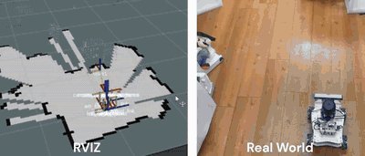 Rescue Robot with Autonomous Mapping and Object Detection
[Video]
|
|
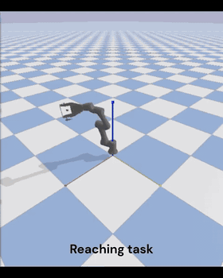 Application of Reinforcement Learning in Step Convergence for 6-DoF Robotic Arm Movement Path
[Video]
[Architecture]
[Poster]
[Pose Estimation Review]
|
|
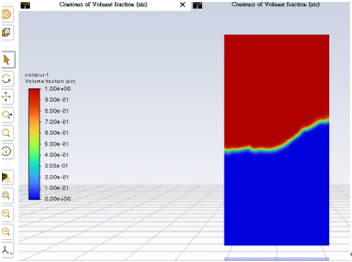 Trajectory Optimization of a Glass of Water
[Trajectory]
|
Education
|
University of Michigan
Deep Learning for Robotics, Mobile Robots, Self-Driving Cars
|
|
|
National Tsing Hua University
Linear Algebra, Control Systems, Machine Learning, Robot Navigation and Exploration
|
Skills
- Robotics
- SLAM (Kalman filter, factor graph), particle-filter localization, VIO, 3D reconstruction (SfM, OpenMVS, 3DGS, NeRF), semantic segmentation, motion planning, sensor calibration, ROS / ROS2, PyBullet, Gazebo
- Programming
- C/C++ (GTSAM, Ceres, PCL, Eigen, OpenCV), Python (PyTorch, NumPy), COLMAP, Open3D, CMake, Docker, AWS, Linux
- Hardware
- LiDAR, cameras, IMU, Arduino, 8051, CAD (Inventor, AutoCAD), Unreal Engine